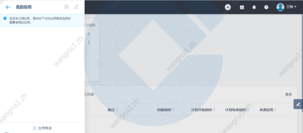
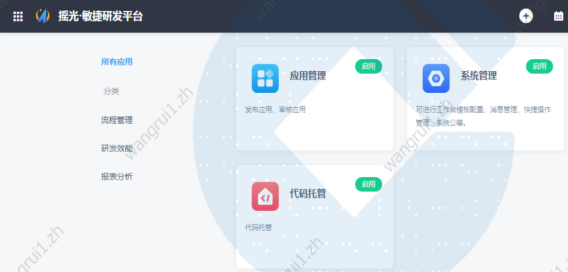
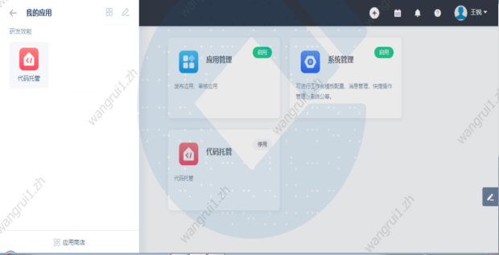
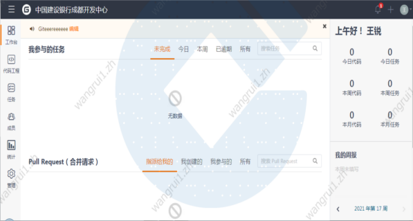
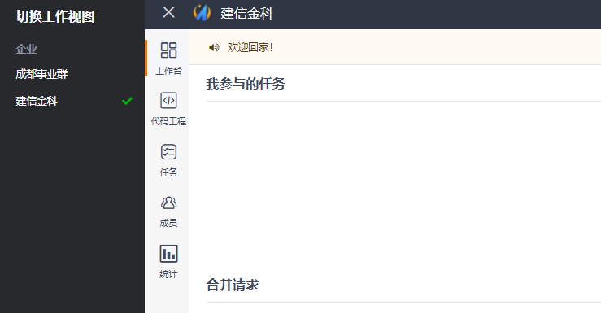

2.登陆【敏捷研发平台】之后，然后点击左上角的【我的应用】按钮，地址如下：
操作环境:http://128.196.1.143:30455/

3.第一次打开我的应用是空的，需要点击左下角的【应用商店】添加应用【代码托管应用】，打开应用商店后，选择【代码托管】的【启用按钮】。
 
4.启用后就可以在我的应用中看到【代码托管】，点击【代码托管】后就进入了Gitee首页。
 
5.切换事业群。选中左侧事业群，在页面顶部会显示选中的事业群名。

事业群选择错误，会影响代码托管模块的后续操作。